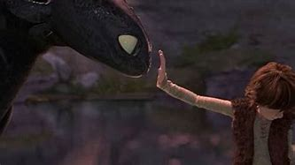

🌊 Overview
In the Viking village of Berk, dragons are a constant threat, raiding livestock and burning homes. Every Viking is trained to fight them — every Viking except Hiccup, a scrawny teen with a mind full of ideas and inventions. Desperate to prove himself, Hiccup injures a dragon with one of his gadgets. But when he finds it in the forest, he can't bring himself to kill it. Instead, he sets it free.
⚔️ Key Moments
- Hiccup captures a Night Fury: During a dragon raid, Hiccup hits the most feared dragon of all — the Night Fury — but no one believes him.
- The secret friendship: Hiccup finds the dragon wounded in the forest. He names it Toothless and forms a secret bond with it.
- Training with kindness: While learning to fight dragons in the arena, Hiccup uses what he learns from Toothless to calm and befriend the dragons.
- The truth is revealed: Hiccup’s secret is exposed, and his father captures Toothless to lead an attack on the dragons' nest.
- The final battle: Hiccup and his friends ride their dragons to help fight a monstrous dragon queen. Together, they save Berk and prove dragons and Vikings can live in harmony.
🌟 Themes
- Friendship: The bond between Hiccup and Toothless shows how compassion can break centuries of conflict.
- Identity & acceptance: Hiccup finds strength in being different, ultimately earning the respect of his village.
- Challenging tradition: The story explores how questioning long-held beliefs can lead to progress and peace.
- Courage: True bravery is shown not through violence, but by standing up for what's right — even when you're alone.